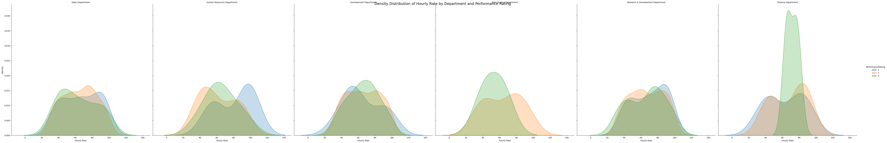
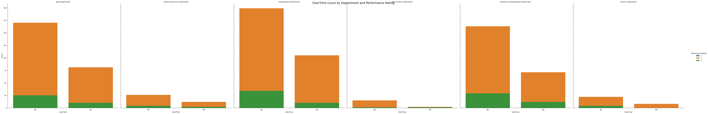
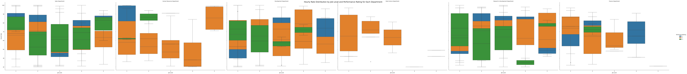
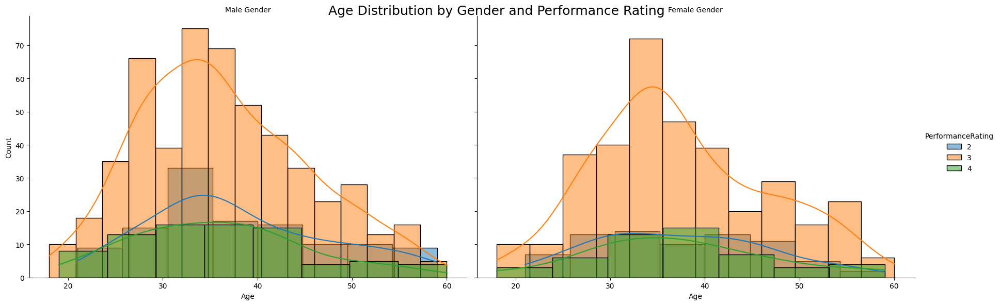
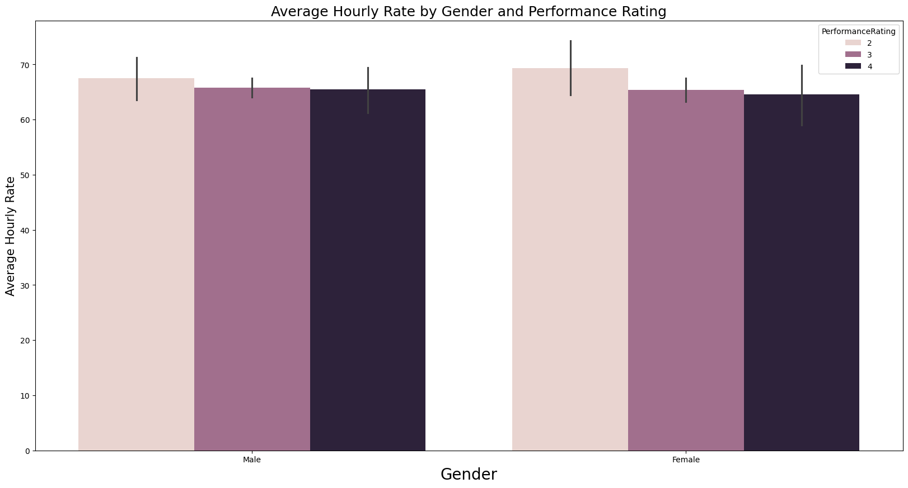
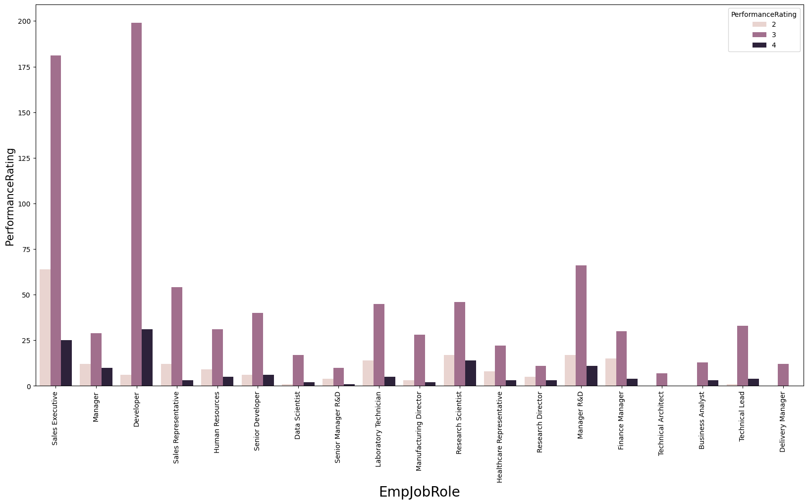

Data Insights & Visualizations
Our analysis has revealed compelling patterns and correlations that provide valuable insights into workforce performance dynamics. The following visualizations showcase key findings from our comprehensive analysis.
Hourly Rate Distribution by Department
Our analysis reveals distinct patterns in hourly rate distributions across departments, segmented by performance ratings. The KDE plots demonstrate that higher-performing employees often exhibit unique compensation patterns within their respective departments, suggesting potential optimization opportunities in compensation structures.

Overtime Distribution Analysis
This visualization highlights the frequency of overtime work across different departments, categorized by performance ratings. The analysis reveals correlations between overtime patterns and performance outcomes, providing insights into workload optimization opportunities and potential burnout risk factors.

Business Travel Impact Assessment
Our violin plot analysis examines the relationship between business travel frequency, hourly compensation, and performance ratings across departments. The visualization reveals how travel commitments correlate with compensation structures and performance outcomes, offering insights for travel policy optimization.

Demographic Performance Analysis
This demographic analysis examines age distribution patterns across genders with performance rating overlays. The histogram with KDE curve highlights key demographic trends that influence performance outcomes, providing valuable insights for targeted talent development initiatives.

Gender Compensation Analysis
Our comprehensive analysis of average hourly rates segmented by gender and performance ratings reveals important compensation patterns. This visualization provides critical insights for organizations seeking to ensure equitable compensation practices while optimizing performance-based incentive structures.

Job Role Performance Distribution
This visualization maps performance rating distributions across various job roles, highlighting which positions demonstrate higher concentrations of specific performance categories. These insights guide organizations in identifying role-specific success factors and development opportunities.
